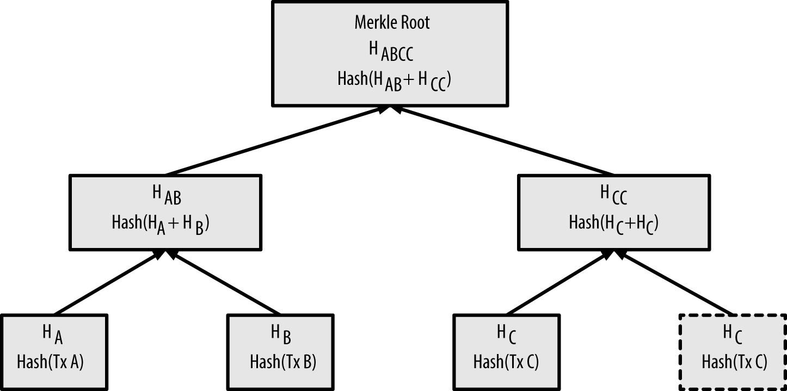

000000000019d6689c085ae165831e934ff763ae46a2a6c172b3f1b60a8ce26f
The Blockchain
Introduction
The blockchain data structure is an ordered, back-linked list of blocks of transactions. The blockchain can be stored as a flat file, or in a simple database. The Bitcoin Core client stores the blockchain metadata using Google’s LevelDB database. Blocks are linked "back," each referring to the previous block in the chain. The blockchain is often visualized as a vertical stack, with blocks layered on top of each other and the first block serving as the foundation of the stack. The visualization of blocks stacked on top of each other results in the use of terms such as "height" to refer to the distance from the first block, and "top" or "tip" to refer to the most recently added block.
Each block within the blockchain is identified by a hash, generated using the SHA256 cryptographic hash algorithm on the header of the block. Each block also references a previous block, known as the parent block, through the "previous block hash" field in the block header. In other words, each block contains the hash of its parent inside its own header. The sequence of hashes linking each block to its parent creates a chain going back all the way to the first block ever created, known as the genesis block.
Although a block has just one parent, it can temporarily have multiple children. Each of the children refers to the same block as its parent and contains the same (parent) hash in the "previous block hash" field. Multiple children arise during a blockchain "fork," a temporary situation that occurs when different blocks are discovered almost simultaneously by different miners (see [forks]). Eventually, only one child block becomes part of the blockchain and the "fork" is resolved. Even though a block may have more than one child, each block can have only one parent. This is because a block has one single "previous block hash" field referencing its single parent.
The "previous block hash" field is inside the block header and thereby affects the current block’s hash. The child’s own identity changes if the parent’s identity changes. When the parent is modified in any way, the parent’s hash changes. The parent’s changed hash necessitates a change in the "previous block hash" pointer of the child. This in turn causes the child’s hash to change, which requires a change in the pointer of the grandchild, which in turn changes the grandchild, and so on. This cascade effect ensures that once a block has many generations following it, it cannot be changed without forcing a recalculation of all subsequent blocks. Because such a recalculation would require enormous computation (and therefore energy consumption), the existence of a long chain of blocks makes the blockchain’s deep history immutable, which is a key feature of bitcoin’s security.
One way to think about the blockchain is like layers in a geological formation, or glacier core sample. The surface layers might change with the seasons, or even be blown away before they have time to settle. But once you go a few inches deep, geological layers become more and more stable. By the time you look a few hundred feet down, you are looking at a snapshot of the past that has remained undisturbed for millions of years. In the blockchain, the most recent few blocks might be revised if there is a chain recalculation due to a fork. The top six blocks are like a few inches of topsoil. But once you go more deeply into the blockchain, beyond six blocks, blocks are less and less likely to change. After 100 blocks back, there is so much stability that the coinbase transaction—the transaction containing newly mined bitcoin—can be spent. A few thousand blocks back (a month) and the blockchain is settled history, for all practical purposes. While the protocol always allows a chain to be undone by a longer chain and while the possibility of any block being reversed always exists, the probability of such an event decreases as time passes until it becomes infinitesimal.
Structure of a Block
A block is a container data structure that aggregates transactions for inclusion in the public ledger, the blockchain. The block is made of a header, containing metadata, followed by a long list of transactions that make up the bulk of its size. The block header is 80 bytes, whereas the average transaction is at least 400 bytes and the average block contains more than 1900 transactions. A complete block, with all transactions, is therefore 10,000 times larger than the block header. The structure of a block describes the structure of a block.
| Size | Field | Description |
|---|---|---|
4 bytes |
Block Size |
The size of the block, in bytes, following this field |
80 bytes |
Block Header |
Several fields form the block header |
1–9 bytes (VarInt) |
Transaction Counter |
How many transactions follow |
Variable |
Transactions |
The transactions recorded in this block |
Block Header
The block header consists of three sets of block metadata. First, there is a reference to a previous block hash, which connects this block to the previous block in the blockchain. The second set of metadata, namely the difficulty, timestamp, and nonce, relate to the mining competition, as detailed in [mining]. The third piece of metadata is the merkle tree root, a data structure used to efficiently summarize all the transactions in the block. The structure of the block header describes the structure of a block header.
| Size | Field | Description |
|---|---|---|
4 bytes |
Version |
A version number to track software/protocol upgrades |
32 bytes |
Previous Block Hash |
A reference to the hash of the previous (parent) block in the chain |
32 bytes |
Merkle Root |
A hash of the root of the merkle tree of this block’s transactions |
4 bytes |
Timestamp |
The approximate creation time of this block (seconds from Unix Epoch) |
4 bytes |
Difficulty Target |
The Proof-of-Work algorithm difficulty target for this block |
4 bytes |
Nonce |
A counter used for the Proof-of-Work algorithm |
The nonce, difficulty target, and timestamp are used in the mining process and will be discussed in more detail in [mining].
Block Identifiers: Block Header Hash and Block Height
The primary identifier of a block is its cryptographic hash, a digital fingerprint, made by hashing the block header twice through the SHA256 algorithm. The resulting 32-byte hash is called the block hash but is more accurately the block header hash, because only the block header is used to compute it. For example, 000000000019d6689c085ae165831e934ff763ae46a2a6c172b3f1b60a8ce26f is the block hash of the first bitcoin block ever created. The block hash identifies a block uniquely and unambiguously and can be independently derived by any node by simply hashing the block header.
Note that the block hash is not actually included inside the block’s data structure, neither when the block is transmitted on the network, nor when it is stored on a node’s persistence storage as part of the blockchain. Instead, the block’s hash is computed by each node as the block is received from the network. The block hash might be stored in a separate database table as part of the block’s metadata, to facilitate indexing and faster retrieval of blocks from disk.
A second way to identify a block is by its position in the blockchain, called the block height. The first block ever created is at block height 0 (zero) and is the same block that was previously referenced by the following block hash 000000000019d6689c085ae165831e934ff763ae46a2a6c172b3f1b60a8ce26f. A block can thus be identified in two ways: by referencing the block hash or by referencing the block height. Each subsequent block added "on top" of that first block is one position "higher" in the blockchain, like boxes stacked one on top of the other. The block height on January 1, 2017 was approximately 446,000, meaning there were 446,000 blocks stacked on top of the first block created in January 2009.
Unlike the block hash, the block height is not a unique identifier. Although a single block will always have a specific and invariant block height, the reverse is not true—the block height does not always identify a single block. Two or more blocks might have the same block height, competing for the same position in the blockchain. This scenario is discussed in detail in the section [forks]. The block height is also not a part of the block’s data structure; it is not stored within the block. Each node dynamically identifies a block’s position (height) in the blockchain when it is received from the bitcoin network. The block height might also be stored as metadata in an indexed database table for faster retrieval.
|
Tip
|
A block’s block hash always identifies a single block uniquely. A block also always has a specific block height. However, it is not always the case that a specific block height can identify a single block. Rather, two or more blocks might compete for a single position in the blockchain. |
The Genesis Block
The first block in the blockchain is called the genesis block and was created in 2009. It is the common ancestor of all the blocks in the blockchain, meaning that if you start at any block and follow the chain backward in time, you will eventually arrive at the genesis block.
Every node always starts with a blockchain of at least one block because the genesis block is statically encoded within the bitcoin client software, such that it cannot be altered. Every node always "knows" the genesis block’s hash and structure, the fixed time it was created, and even the single transaction within. Thus, every node has the starting point for the blockchain, a secure "root" from which to build a trusted blockchain.
See the statically encoded genesis block inside the Bitcoin Core client, in chainparams.cpp.
The following identifier hash belongs to the genesis block:
You can search for that block hash in any block explorer website, such as blockchain.info, and you will find a page describing the contents of this block, with a URL containing that hash:
Using the Bitcoin Core reference client on the command line:
$ bitcoin-cli getblock 000000000019d6689c085ae165831e934ff763ae46a2a6c172b3f1b60a8ce26f
{
"hash" : "000000000019d6689c085ae165831e934ff763ae46a2a6c172b3f1b60a8ce26f",
"confirmations" : 308321,
"size" : 285,
"height" : 0,
"version" : 1,
"merkleroot" : "4a5e1e4baab89f3a32518a88c31bc87f618f76673e2cc77ab2127b7afdeda33b",
"tx" : [
"4a5e1e4baab89f3a32518a88c31bc87f618f76673e2cc77ab2127b7afdeda33b"
],
"time" : 1231006505,
"nonce" : 2083236893,
"bits" : "1d00ffff",
"difficulty" : 1.00000000,
"nextblockhash" : "00000000839a8e6886ab5951d76f411475428afc90947ee320161bbf18eb6048"
}The genesis block contains a hidden message within it. The coinbase transaction input contains the text "The Times 03/Jan/2009 Chancellor on brink of second bailout for banks." This message was intended to offer proof of the earliest date this block was created, by referencing the headline of the British newspaper The Times. It also serves as a tongue-in-cheek reminder of the importance of an independent monetary system, with bitcoin’s launch occurring at the same time as an unprecedented worldwide monetary crisis. The message was embedded in the first block by Satoshi Nakamoto, bitcoin’s creator.
Linking Blocks in the Blockchain
Bitcoin full nodes maintain a local copy of the blockchain, starting at the genesis block. The local copy of the blockchain is constantly updated as new blocks are found and used to extend the chain. As a node receives incoming blocks from the network, it will validate these blocks and then link them to the existing blockchain. To establish a link, a node will examine the incoming block header and look for the "previous block hash."
Let’s assume, for example, that a node has 277,314 blocks in the local copy of the blockchain. The last block the node knows about is block 277,314, with a block header hash of:
00000000000000027e7ba6fe7bad39faf3b5a83daed765f05f7d1b71a1632249
The bitcoin node then receives a new block from the network, which it parses as follows:
{
"size" : 43560,
"version" : 2,
"previousblockhash" :
"00000000000000027e7ba6fe7bad39faf3b5a83daed765f05f7d1b71a1632249",
"merkleroot" :
"5e049f4030e0ab2debb92378f53c0a6e09548aea083f3ab25e1d94ea1155e29d",
"time" : 1388185038,
"difficulty" : 1180923195.25802612,
"nonce" : 4215469401,
"tx" : [
"257e7497fb8bc68421eb2c7b699dbab234831600e7352f0d9e6522c7cf3f6c77",
#[... many more transactions omitted ...]
"05cfd38f6ae6aa83674cc99e4d75a1458c165b7ab84725eda41d018a09176634"
]
}Looking at this new block, the node finds the previousblockhash field, which contains the hash of its parent block. It is a hash known to the node, that of the last block on the chain at height 277,314. Therefore, this new block is a child of the last block on the chain and extends the existing blockchain. The node adds this new block to the end of the chain, making the blockchain longer with a new height of 277,315. Blocks linked in a chain by reference to the previous block header hash shows the chain of three blocks, linked by references in the previousblockhash field.
Merkle Trees
Each block in the bitcoin blockchain contains a summary of all the transactions in the block using a merkle tree.
A merkle tree, also known as a binary hash tree, is a data structure used for efficiently summarizing and verifying the integrity of large sets of data. Merkle trees are binary trees containing cryptographic hashes. The term "tree" is used in computer science to describe a branching data structure, but these trees are usually displayed upside down with the "root" at the top and the "leaves" at the bottom of a diagram, as you will see in the examples that follow.

Figure 1. Blocks linked in a chain by reference to the previous block header hash
Merkle trees are used in bitcoin to summarize all the transactions in a block, producing an overall digital fingerprint of the entire set of transactions, providing a very efficient process to verify whether a transaction is included in a block. A merkle tree is constructed by recursively hashing pairs of nodes until there is only one hash, called the root, or merkle root. The cryptographic hash algorithm used in bitcoin’s merkle trees is SHA256 applied twice, also known as double-SHA256.
When N data elements are hashed and summarized in a merkle tree, you can check to see if any one data element is included in the tree with at most 2*log~2~(N) calculations, making this a very efficient data structure.
The merkle tree is constructed bottom-up. In the following example, we start with four transactions, A, B, C, and D, which form the leaves of the merkle tree, as shown in Calculating the nodes in a merkle tree. The transactions are not stored in the merkle tree; rather, their data is hashed and the resulting hash is stored in each leaf node as HA, HB, HC, and HD:
HA = SHA256(SHA256(Transaction A))
Consecutive pairs of leaf nodes are then summarized in a parent node, by concatenating the two hashes and hashing them together. For example, to construct the parent node HAB, the two 32-byte hashes of the children are concatenated to create a 64-byte string. That string is then double-hashed to produce the parent node’s hash:
HAB = SHA256(SHA256(HA + HB))
The process continues until there is only one node at the top, the node known as the merkle root. That 32-byte hash is stored in the block header and summarizes all the data in all four transactions. Calculating the nodes in a merkle tree shows how the root is calculated by pair-wise hashes of the nodes.

Figure 2. Calculating the nodes in a merkle tree
Because the merkle tree is a binary tree, it needs an even number of leaf nodes. If there is an odd number of transactions to summarize, the last transaction hash will be duplicated to create an even number of leaf nodes, also known as a balanced tree. This is shown in Duplicating one data element achieves an even number of data elements, where transaction C is duplicated.

Figure 3. Duplicating one data element achieves an even number of data elements
The same method for constructing a tree from four transactions can be generalized to construct trees of any size. In bitcoin it is common to have several hundred to more than a thousand transactions in a single block, which are summarized in exactly the same way, producing just 32 bytes of data as the single merkle root. In A merkle tree summarizing many data elements, you will see a tree built from 16 transactions. Note that although the root looks bigger than the leaf nodes in the diagram, it is the exact same size, just 32 bytes. Whether there is one transaction or a hundred thousand transactions in the block, the merkle root always summarizes them into 32 bytes.
To prove that a specific transaction is included in a block, a node only needs to produce log~2~(N) 32-byte hashes, constituting an authentication path or merkle path connecting the specific transaction to the root of the tree. This is especially important as the number of transactions increases, because the base-2 logarithm of the number of transactions increases much more slowly. This allows bitcoin nodes to efficiently produce paths of 10 or 12 hashes (320–384 bytes), which can provide proof of a single transaction out of more than a thousand transactions in a megabyte-sized block.

Figure 4. A merkle tree summarizing many data elements
In A merkle path used to prove inclusion of a data element, a node can prove that a transaction K is included in the block by producing a merkle path that is only four 32-byte hashes long (128 bytes total). The path consists of the four hashes (shown with a shaded background in A merkle path used to prove inclusion of a data element) HL, HIJ, HMNOP, and HABCDEFGH. With those four hashes provided as an authentication path, any node can prove that HK (with a black background at the bottom of the diagram) is included in the merkle root by computing four additional pair-wise hashes HKL, HIJKL, HIJKLMNOP, and the merkle tree root (outlined in a dashed line in the diagram).
Figure 5. A merkle path used to prove inclusion of a data element
The code in Building a merkle tree demonstrates the process of creating a merkle tree from the leaf-node hashes up to the root, using the libbitcoin library for some helper functions.
Example 1. Building a merkle tree
link:code/merkle.cpp[]Compiling and running the merkle example code shows the result of compiling and running the merkle code.
Example 2. Compiling and running the merkle example code
$ # Compile the merkle.cpp code
$ g++ -o merkle merkle.cpp $(pkg-config --cflags --libs libbitcoin)
$ # Run the merkle executable
$ ./merkle
Current merkle hash list:
32650049a0418e4380db0af81788635d8b65424d397170b8499cdc28c4d27006
30861db96905c8dc8b99398ca1cd5bd5b84ac3264a4e1b3e65afa1bcee7540c4
Current merkle hash list:
d47780c084bad3830bcdaf6eace035e4c6cbf646d103795d22104fb105014ba3
Result: d47780c084bad3830bcdaf6eace035e4c6cbf646d103795d22104fb105014ba3The efficiency of merkle trees becomes obvious as the scale increases. Merkle tree efficiency shows the amount of data that needs to be exchanged as a merkle path to prove that a transaction is part of a block.
| Number of transactions | Approx. size of block | Path size (hashes) | Path size (bytes) |
|---|---|---|---|
16 transactions |
4 kilobytes |
4 hashes |
128 bytes |
512 transactions |
128 kilobytes |
9 hashes |
288 bytes |
2048 transactions |
512 kilobytes |
11 hashes |
352 bytes |
65,535 transactions |
16 megabytes |
16 hashes |
512 bytes |
As you can see from the table, while the block size increases rapidly, from 4 KB with 16 transactions to a block size of 16 MB to fit 65,535 transactions, the merkle path required to prove the inclusion of a transaction increases much more slowly, from 128 bytes to only 512 bytes. With merkle trees, a node can download just the block headers (80 bytes per block) and still be able to identify a transaction’s inclusion in a block by retrieving a small merkle path from a full node, without storing or transmitting the vast majority of the blockchain, which might be several gigabytes in size. Nodes that do not maintain a full blockchain, called simplified payment verification (SPV) nodes, use merkle paths to verify transactions without downloading full blocks.
Merkle Trees and Simplified Payment Verification (SPV)
Merkle trees are used extensively by SPV nodes. SPV nodes don’t have all transactions and do not download full blocks, just block headers. In order to verify that a transaction is included in a block, without having to download all the transactions in the block, they use an authentication path, or merkle path.
Consider, for example, an SPV node that is interested in incoming payments to an address contained in its wallet. The SPV node will establish a bloom filter (see [bloom_filters]) on its connections to peers to limit the transactions received to only those containing addresses of interest. When a peer sees a transaction that matches the bloom filter, it will send that block using a merkleblock message. The merkleblock message contains the block header as well as a merkle path that links the transaction of interest to the merkle root in the block. The SPV node can use this merkle path to connect the transaction to the block and verify that the transaction is included in the block. The SPV node also uses the block header to link the block to the rest of the blockchain. The combination of these two links, between the transaction and block, and between the block and blockchain, proves that the transaction is recorded in the blockchain. All in all, the SPV node will have received less than a kilobyte of data for the block header and merkle path, an amount of data that is more than a thousand times less than a full block (about 1 megabyte currently).
Bitcoin’s Test Blockchains
You might be surprised to learn that there is more than one bitcoin blockchain. The "main" bitcoin blockchain, the one created by Satoshi Nakamoto on January 3rd, 2009, the one with the genesis block we studied in this chapter, is called mainnet. There are other bitcoin blockchains that are used for testing purposes: at this time testnet, segnet, and regtest. Let’s look at each in turn.
Testnet—Bitcoin’s Testing Playground
Testnet is the name of the test blockchain, network, and currency that is used for testing purposes. The testnet is a fully featured live P2P network, with wallets, test bitcoins (testnet coins), mining, and all the other features of mainnet. There are really only two differences: testnet coins are meant to be worthless and mining difficulty should be low enough that anyone can mine testnet coins relatively easily (keeping them worthless).
Any software development that is intended for production use on bitcoin’s mainnet should first be tested on testnet with test coins. This protects both the developers from monetary losses due to bugs and the network from unintended behavior due to bugs.
Keeping the coins worthless and the mining easy, however, is not easy. Despite pleas from developers, some people use advanced mining equipment (GPUs and ASICs) to mine on testnet. This increases the difficulty, makes it impossible to mine with a CPU, and eventually makes it difficult enough to get test coins that people start valuing them, so they’re not worthless. As a result, every now and then, the testnet has to be scrapped and restarted from a new genesis block, resetting the difficulty.
The current testnet is called testnet3, the third iteration of testnet, restarted in February 2011 to reset the difficulty from the previous testnet.
Keep in mind that testnet3 is a large blockchain, in excess of 20 GB in early 2017. It will take a day or so to sync fully and use up resources on your computer. Not as much as mainnet, but not exactly "lightweight" either. One good way to run a testnet node is as a virtual machine image (e.g., VirtualBox, Docker, Cloud Server, etc.) dedicated for that purpose.
Using testnet
Bitcoin Core, like almost all other bitcoin software, has full support for operation on testnet instead of mainnet. All of Bitcoin Core’s functions work on testnet, including the wallet, mining testnet coins, and syncing a full testnet node.
To start Bitcoin Core on testnet instead of mainnet you use the testnet switch:
$ bitcoind -testnet
In the logs you should see that bitcoind is building a new blockchain in the testnet3 subdirectory of the default bitcoind directory:
bitcoind: Using data directory /home/username/.bitcoin/testnet3
To connect to bitcoind, you use the bitcoin-cli command-line tool, but you must also switch it to testnet mode:
$ bitcoin-cli -testnet getblockchaininfo
{
"chain": "test",
"blocks": 1088,
"headers": 139999,
"bestblockhash": "0000000063d29909d475a1c4ba26da64b368e56cce5d925097bf3a2084370128",
"difficulty": 1,
"mediantime": 1337966158,
"verificationprogress": 0.001644065914099759,
"chainwork": "0000000000000000000000000000000000000000000000000000044104410441",
"pruned": false,
"softforks": [
[...]
You can also run on testnet3 with other full-node implementations, such as btcd (written in Go) and bcoin (written in JavaScript), to experiment and learn in other programming languages and frameworks.
In early 2017, testnet3 supports all the features of mainnet, including Segregated Witness (see [segwit]). Therefore, testnet3 can also be used to test Segregated Witness features.
Segnet—The Segregated Witness Testnet
In 2016, a special-purpose testnet was launched to aid in development and testing of Segregated Witness (aka segwit; see [segwit]). This test blockchain is called segnet and can be joined by running a special version (branch) of Bitcoin Core.
Since segwit was added to testnet3, it is no longer necessary to use segnet for testing of segwit features.
In the future it is likely we will see other testnet blockchains that are specifically designed to test a single feature or major architectural change, like segnet.
Regtest—The Local Blockchain
Regtest, which stands for "Regression Testing," is a Bitcoin Core feature that allows you to create a local blockchain for testing purposes. Unlike testnet3, which is a public and shared test blockchain, the regtest blockchains are intended to be run as closed systems for local testing. You launch a regtest blockchain from scratch, creating a local genesis block. You may add other nodes to the network, or run it with a single node only to test the Bitcoin Core software.
To start Bitcoin Core in regtest mode, you use the regtest flag:
$ bitcoind -regtest
Just like with testnet, Bitcoin Core will initialize a new blockchain under the regtest subdirectory of your bitcoind default directory:
bitcoind: Using data directory /home/username/.bitcoin/regtest
To use the command-line tool, you need to specify the regtest flag too. Let’s try the getblockchaininfo command to inspect the regtest blockchain:
$ bitcoin-cli -regtest getblockchaininfo
{
"chain": "regtest",
"blocks": 0,
"headers": 0,
"bestblockhash": "0f9188f13cb7b2c71f2a335e3a4fc328bf5beb436012afca590b1a11466e2206",
"difficulty": 4.656542373906925e-10,
"mediantime": 1296688602,
"verificationprogress": 1,
"chainwork": "0000000000000000000000000000000000000000000000000000000000000002",
"pruned": false,
[...]
As you can see, there are no blocks yet. Let’s mine some (500 blocks) and earn the reward:
$ bitcoin-cli -regtest generate 500 [ "7afed70259f22c2bf11e406cb12ed5c0657b6e16a6477a9f8b28e2046b5ba1ca", "1aca2f154a80a9863a9aac4c72047a6d3f385c4eec5441a4aafa6acaa1dada14", "4334ecf6fb022f30fbd764c3ee778fabbd53b4a4d1950eae8a91f1f5158ed2d1", "5f951d34065efeaf64e54e91d00b260294fcdfc7f05dbb5599aec84b957a7766", "43744b5e77c1dfece9d05ab5f0e6796ebe627303163547e69e27f55d0f2b9353", [...] "6c31585a48d4fc2b3fd25521f4515b18aefb59d0def82bd9c2185c4ecb754327" ]
It will only take a few seconds to mine all these blocks, which certainly makes it easy for testing. If you check your wallet balance, you will see that you earned reward for the first 400 blocks (coinbase rewards must be 100 blocks deep before you can spend them):
$ bitcoin-cli -regtest getbalance 12462.50000000
Using Test Blockchains for Development
Bitcoin’s various blockchains (regtest, segnet, testnet3, mainnet) offer a range of testing environments for bitcoin development. Use the test blockchains whether you are developing for Bitcoin Core, or another full-node consensus client; an application such as a wallet, exchange, ecommerce site; or even developing novel smart contracts and complex scripts.
You can use the test blockchains to establish a development pipeline. Test your code locally on a regtest as you develop it. Once you are ready to try it on a public network, switch to testnet to expose your code to a more dynamic environment with more diversity of code and applications. Finally, once you are confident your code works as expected, switch to mainnet to deploy it in production. As you make changes, improvements, bug fixes, etc., start the pipeline again, deploying each change first on regtest, then on testnet, and finally into production.